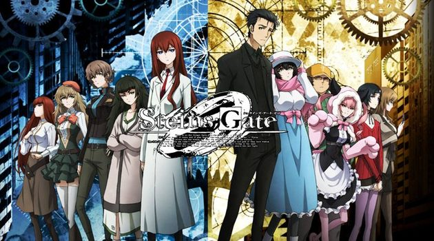
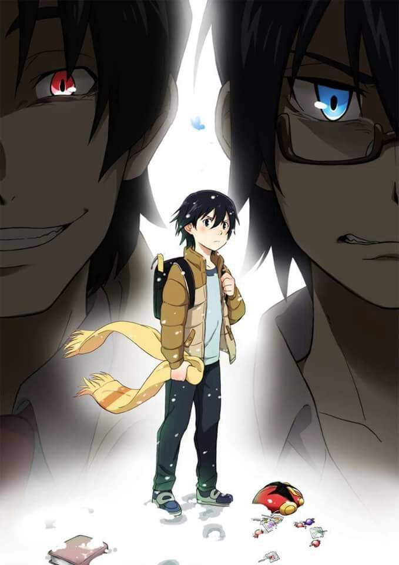
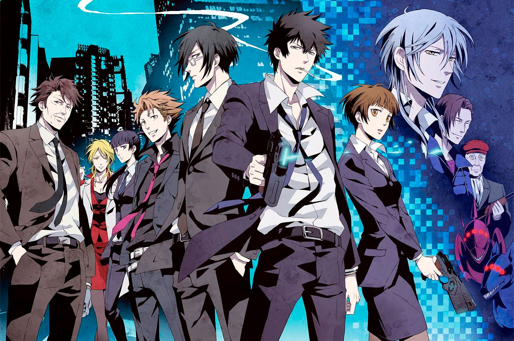

Los mejores animes del género seinen
FATE / STAY NIGHT
Este anime se destaca especialmente por la calidad de animación de sus batallas y los temas sociales que trata en ciertas situaciones. La historia se centra en Emiya Shirou, un superviviente de la catástrofe de la cuarta guerra por el Santo Grial de la ciudad de Fuyuki que se verá envuelto en la siguiente edición de la misma. Emiya será el Master del Servant Saber y, junto a ella, deberá enfrentarse a los otros seis grupos de Master y Servant en esta despiada guerra para alcanzar el anhelado grial que concederá el deseo que tanto Master como Servant le pidan.

DEATH NOTE
La complejidad de los temas que se tratan como el significado de la justicia y la moral son temas especialmente atractivos para el seinen. Light Yagami es un excelente estudiante japonés que ha tenido una vida aburrida. Esto cambia radicalmente cuando encuentra tirado en el suelo un cuaderno conocido como Death Note (Libreta de la Muerte), un cuaderno perdido por Ryuk, un Shinigami (Dios de la muerte). Cualquier humano cuyo nombre esté escrito en el cuaderno morirá, y ahora Light ha decidido utilizar este poder para crear un mundo perfecto sin criminales. Pero cuando los criminales comienzan a morir de forma masiva, las autoridades envían al legendario detective L en busca del asesino. Con L pisándole los talones. ¿Que pasara con Light y su ambicioso proyecto? ¿Podrá L desenmascararle?

STEINS;GATE
El estres que meneja el tema y todas la paradojas que tienen que ver con los viajes en el tiempo y la persecusion del grupo de el protagonista lleva a ser un tema llamativo para la tematica seinen sin nombrar el hacia donde conduce el desarrollo de personaje. La historia trata sobre un grupo de amigos que construye un dispositivo a partir de un horno microondas, capaz de enviar mensajes al pasado. Poco después, empiezan a ser perseguidos por la SERN, organización que también investiga los viajes en el tiempo.
BOKU DAKE GA INAI MACHI
La historia comienza con Satoru Fujinuma, un autor de manga frustrado que apenas consigue llegar a final de mes, trabaja como repartidor de pizza y lleva una vida aparentemente ordinaria y aburrida. Sin embargo, tiene una habilidad especial: siempre que presencia algún evento trágico, logra viajar en el tiempo.Esta maravillosa historia tambien toca el interesante tema que es el viaje en el tiempo y todo lo que implica sus paradojas.
PSYCHO-PASS
La historia se desarrolla en una distopía cyberpunk que transcurre en un mundo donde las capacidades mentales de las personas están constantemente siendo evaluadas. Si un ciudadano es diagnosticado como un criminal en potencia, éste puede ser sentenciado a prisión o muerte, incluso sin haber cometido ningún crimen. Esta probabilidad se conoce como el índice de "Coeficiente de Criminalidad" y consiste en un número asociado a un color en cada persona. Esta serie pone en cuestion varios temas sociales que plantean una forma de crear la utopica deseada por un estado que controla perfectamente la tasa de criminalidad. 